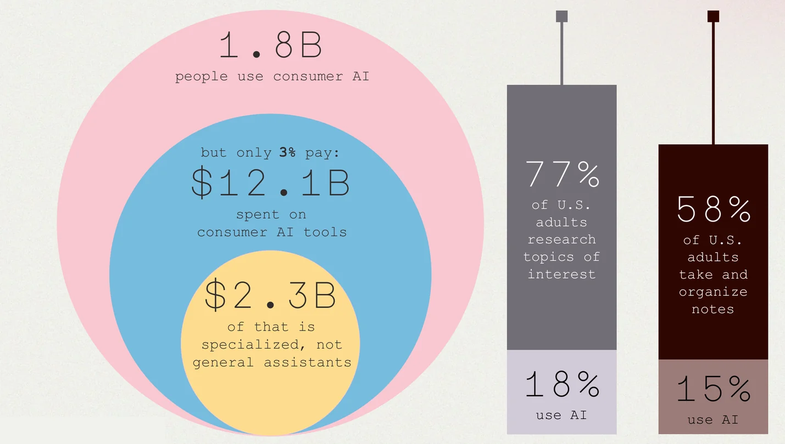

set the scene
Interesting information… lots of it.
You and three friends are talking about the 2026 World Cup. You mention how you wanted Norway to win, then someone mentions Norway has the largest sovereign wealth fund in the world. One friend wanted Japan to win, and the conversation shifts to her favorite Japanese films, including Seven Samurai from 1954 and Kwaidan from 1965. Another wanted Cape Verde to win, given they were major underdogs. The last friend wishes the Philippines had made it, because he thinks they’re the most remarkable underdogs in history. He talks about the Philippines in World War II, including the Battle of Leyte Gulf, and Taffy 3, the tin-can sailors who held off an entire Japanese fleet. You ask which myth the story of Taffy 3 resembles, and the group agrees: David and Goliath.
An hour later, you and your friends forgot the specifics.
Great conversations should not be forgotten. They are essential to personal growth, and the building blocks of a life’s meaning.
Every way of keeping one gives something up
Voice memos & pendants
Record everything
- privacy
- beauty
- ease
AI note takers
Turn dinner into minutes
- privacy
- beauty
- ease
Pen & paper
Stop the talking
- privacy
- beauty
- ease
Oak
Keeps what mattered
- privacy
- beauty
- ease
and it’s shared, with the conversation’s shape
Oak keeps what mattered, and lets the rest go. It is a mobile app for the people you talk with most: friends, partners, mentors, co-founders, book clubs. With everyone’s consent it listens, and as you talk it draws the conversation the way it happened.
Each conversation grows a tree
-
Topics become branches
15:49Wed, Jul 1 · 11:28 PM1 branches · 12 acorns1.Symphony No. 3 in Eb major, Op. 55 (‘Eroica’) as a model of complete creativity4factfirst dedicated to Napoleon5facthundreds of emphatic repeated…6referencePrometheusOne finger to rotate · two to zoom & pan · tap an acorn -
Meaningful moments become acorns
15:44Wed, Jul 1 · 11:28 PM1 branches · 12 acorns1.Symphony No. 3 in Eb major, Op. 55 (‘Eroica’) as a model of complete creativity4factfirst dedicated to Napoleon5facthundreds of emphatic repeated…6referencePrometheusreferencePrometheusfrom Symphony No. 3 in Eb major, Op. 55 (‘Eroica’) as a model of complete creativity -
Rich acorns attract a chickadee, who leads you to the Wikipedia article
15:48◂ OakPrometheus
ArticleTalk文AFor other uses, see Prometheus (disambiguation).In Greek mythology, Prometheus (/prəˈmiːθiəs/; Ancient Greek: Προμηθεύς [promɛːtʰěu̯s])[1] is a Titan responsible for creating or aiding humanity in its earliest days. He defied the Olympian gods by taking fire from them and giving it to humanity in the form of technology, knowledge and, more generally, civilization.
PrometheusTitan god of forethoughtPrometheus tortured by the eagle
(black-figure kylix, 560–550 BC, Vatican Museums)en.wikipedia.org
Many trees make a forest
A longitudinal record, in which ideas and patterns become visible.
- Revisit an old tree, and start the conversation where you left off.
- Share a tree with the people you spoke with.
- Export everything. Your trees are kept on your device, and never used to train models or for analysis.
Most people are curious; few have tools made for it, and fewer still pay for the general ones.

Privacy is the product. Audio is transcribed as it is heard, analyzed in real time, and discarded continuously. Neither the transcript nor what Oak makes of it is stored or used for training, and nothing persists on a server. Your trees export to your own device, so they are never proprietary, and never training data.
Oak is in development. We would like to hear from people who love a good conversation.
Start a conversation